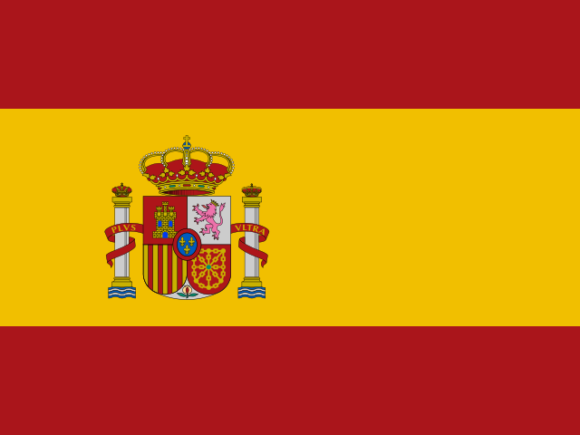

Ronaldo Luís Nazário de Lima
Popularmente conhecido como Ronaldo Fenômeno, é um empresário e ex-futebolista brasileiro que atuava como centroavante, considerado por muitos um dos maiores atletas da história do futebol. Nascido no município do Rio de Janeiro, em um bairro localizado na zona norte da cidade no dia 18 de setembro de 1976 (46 anos). Vivia com seus pais, que eram funcionários de uma antiga empresa de telefonia, a Telerj, e mais dois irmãos. Desde criança, o Fenômeno tinha o sonho de se tornar jogador de futebol e conseguir dar uma vida mais digna para a sua família, semelhante à realidade de muitos jogadores que começam bem cedo a tentar a sorte no esporte.
Iniciou seu caminho no esporte em 1989 no futsal do Valqueire Tênis Clube do Rio de Janeiro, transferindo-se cedo para o Social Ramos Clube do Rio de Janeiro, para logo em seguida mudar-se em 1990 para o São Cristóvão, também carioca, e passar do futsal para o futebol. Em 1993 com 17 anos de idade, foi contratado pelo Cruzeiro (MG) onde iniciou sua carreira profissionalmente. Logo no segundo semestre de 1993, Ronaldo ajudou sua equipe a conquistar a Copa do Brasil e o Campeonato Mineiro.
Seguiu os passos do compatriota Romário e em 1994 iniciou sua carreira na Europa no PSV Eindhoven, sendo artilheiro da Eredivisie e campeão da Copa dos Países Baixos. Transferiu-se para o Barcelona em 1996, onde teve a melhor temporada de sua carreira em número de gols, conquistando a Supercopa da Espanha, a Copa do Rei e a Recopa Europeia, sendo escolhido como Melhor Jogador do Mundo pela FIFA e segundo melhor pela France Football no tradicional prêmio Ballon d'Or, sendo até hoje o mais jovem a receber o prêmio da entidade máxima do esporte, com apenas vinte anos de idade.
Surpreendentemente, transferiu-se para a Internazionale no ano seguinte, quebrando o recorde da transferência mais cara da história até então. Foi eleito pela segunda vez como o melhor jogador do mundo em sua primeira temporada no clube, dessa vez tanto pela premiação da FIFA como na Bola de Ouro, também tornando-se o mais jovem vencedor da história do prêmio da revista francesa. Em 1998, um de seus anos mais goleadores, foi eleito como segundo Melhor do Mundo pela FIFA e como terceiro pela France Football. Na equipe italiana, venceu a Copa da UEFA mas não conseguiu nenhuma artilharia principalmente devido às suas constantes lesões entre 1999 e 2001.
Em agosto de 2002, o Real Madrid anunciou a compra do atacante, tornando-o um dos poucos futebolistas que estiveram dos dois lados do El Clásico. Pelo clube merengue, venceu a Copa Intercontinental de 2002, a Supercopa e a La Liga; além disso, foi eleito o Melhor do Mundo pela FIFA em 2002 e venceu a Ballon d'Or no mesmo ano. Seu último clube europeu foi o Milan: ao ingressar no clube em 2007, entrou para a história como um dos jogadores que atuou em ambas as equipes do Derby de Milão. Contudo, sua passagem foi curta devido à novas lesões, fazendo com que ele jogasse apenas 20 partidas em duas temporadas. Já no fim da carreira, foi anunciado pelo Corinthians em 2009, conquistando uma Copa do Brasil e um Campeonato Paulista. Jogou no clube até 2011, quando anunciou sua aposentadoria.
Ronaldo recebeu as primeiras convocações para as Seleções de base do Brasil quando ainda estava no São Cristóvão. Foi artilheiro do Campeonato Sul-Americano Sub-17 na Colômbia, em 1993, sendo o único destaque individual do time que terminou apenas em quarto lugar e fora do Campeonato Mundial de Futebol Sub-17 de 1993. Recebeu a primeira chance na Seleção principal em março de 1994, às vésperas da Copa do Mundo FIFA de 1994, em jogo contra a Argentina.
Com apenas 17 anos, na Copa do Mundo FIFA de 1994, nos Estados Unidos, integrou a Seleção  Brasileira no seu tetracampeonato, embora não tenha entrado em campo. Ainda assim, o jogador, campeão sem jogar, jádespertava certezas de seu potencial. Enzo Bearzot, técnico da Itália na vitoriosa Copa do Mundo FIFA de 1982, já o chamava de "fenômeno", e o pensamento geral era de que o garoto triunfaria na Copa seguinte.
Brasileira no seu tetracampeonato, embora não tenha entrado em campo. Ainda assim, o jogador, campeão sem jogar, jádespertava certezas de seu potencial. Enzo Bearzot, técnico da Itália na vitoriosa Copa do Mundo FIFA de 1982, já o chamava de "fenômeno", e o pensamento geral era de que o garoto triunfaria na Copa seguinte.
Anos depois, agora uma estrela mundial, vindo de grande temporada no Barcelona, Ronaldo jogou a Copa América de 1997 e voltou campeão, com cinco gols marcados, jogando contra a anfitriã, a Bolívia, na altitude de La Paz. Pouco depois, participou ativamente do primeiro título do Brasil na Copa das Confederações FIFA de 1997. Um ano depois, sendo o principal personagem e referência da Seleção, jogou pela primeira vez uma Copa do Mundo FIFA.
O Mundial da França, em 1998, prometia ser a consagração do atacante brasileiro. Ronaldo, que foi ao torneio como duas vezes o Melhor Jogador do Mundo pela FIFA, marcou quatro vezes: um contra o Marrocos, na primeira fase; dois contra o Chile, nas oitavas; e um contra os Países Baixos, nas semifinais, tendo ainda acertado a sua cobrança na decisão por pênaltis nesta partida.
Horas antes da decisão, contra a anfitriã França, Ronaldo foi abatido por uma misteriosa convulsão, diagnosticada desde como estresse até como ataque epilético. Deixou o hospital onde foi levado apenas 75 minutos antes da partida. Ronaldo mal andou em campo, apenas observando os franceses ganharem e levarem pela primeira vez a Copa.
Sem ritmo de jogo e com uma imensa cicatriz no joelho direito, foi ainda assim chamado para a Copa do Mundo FIFA de 2002 por Luiz Felipe Scolari. A Copa veio e o Fenômeno ressurgiu, marcando oito vezes, deixando de anotar um tento apenas contra a Inglaterra. A artilharia do mundial incluiu os dois gols na decisão, contra a Alemanha. A campanha na Copa foi determinante para que ele voltasse a ser levado seriamente, bem como para que recebesse pela terceira vez o prêmio de Melhor Jogador do Mundo pela FIFA.
Quatro anos se passaram sem que Ronaldo disputasse algum torneio pelo Brasil, só sendo chamado por conta do Mundial da Alemanha. Na ocasião, ele já não era a maior estrela do Brasil, e sim seu xará e fã Ronaldinho Gaúcho, com quem compunha o "Quadrado Mágico", ao lado de Kaká e Adriano. O Brasil apresentou um futebol decepcionante na Copa, com Ronaldo tendo ido ao torneio longe da melhor forma física. Ainda assim, demonstrou lampejos de craque, marcando três vezes. Entretanto nas quartas de finais diante da França ronaldo fez seu ultimo jogo pela seleção, na derrota e eliminação da Copa do Mundo FIFA 2006. Pela seleção Ronaldo marcou 67 gols em 105 jogos.
| Melhor jogador do Mundo FIFA | 1996 / 1997 / 2002 |
| Ballon d'Or | 1997 / 2002 |
| Onze d'Or | 1997 / 2002 |
| Chuteira de ouro UEFA | 1997 |
| Jogador do ano da UEFA | 1997-98 |
| Atacante do ano da UEFA | 1997-98 |
| Bola de ouro Copa do Mundo FIFA | 1998 |
| Bola de prata Copa do Mundo FIFA | 2002 |
| Chuteira de ouro Copa do Mundo FIFA | 2002 |
| Copa do Mundo FIFA | 1994 / 2002 |
| Copa América | 1997 / 1999 |
| Supercopa da UEFA | 2002 / 2007 |
| Copa do Brasil | 1993 / 2009 |
| Copa das Confederações | 1997 |
| Copa da UEFA | 1998 |
| Time/Seleção | Jogos | Gols |
| Cruzeiro |
58 | 56 |
| PSV | 57 | 54 |
| Barcelona | 49 | 47 |
| Internazionale | 99 | 59 |
| Real Madrid | 177 | 104 |
| Milan | 20 | 9 |
| Corinthians |
69 | 35 |
| Seleção Brasileira |
105 | 67 |